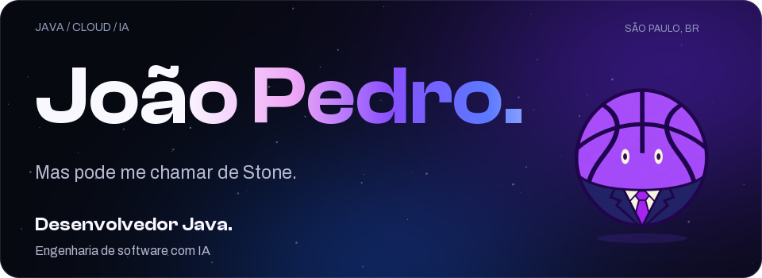
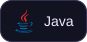
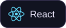
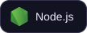
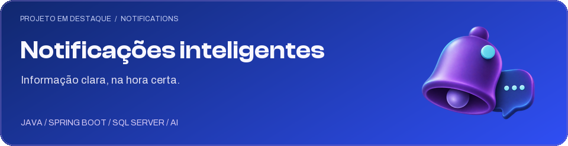
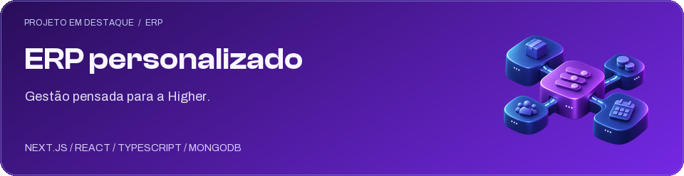
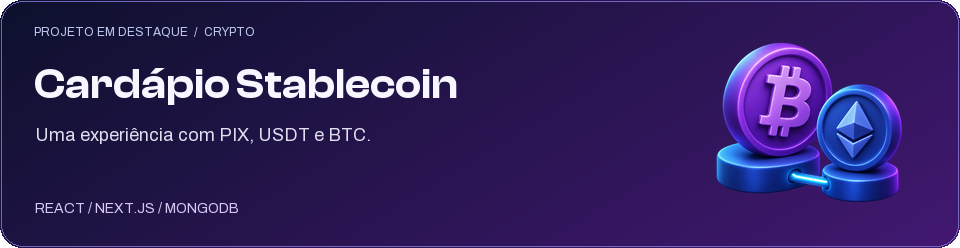

STONE / GITHUB PROFILE · PRÉVIA LOCAL
English

Ideias ganham forma. Código faz acontecer.
Sou João Pedro, mas pode me chamar de Stone. Estudo Ciência da Computação e construo aplicações com Java, Spring Boot e AWS, conectando software, pessoas e ideias.
Atuo com desenvolvimento full stack em contextos financeiros e blockchain. Gosto de APIs bem construídas, integrações confiáveis e de explorar como a IA pode ajudar a transformar uma ideia em software.
Fora do código, sou atleta de basquete. O mascote roxo é um pedacinho dessa história.
Ferramentas para construir






Também no meu dia a dia: JavaScript, SQL, MongoDB, APIs REST e desenvolvimento com apoio de IA.
Do conceito à experiência

Código · Ver projeto

Ver projeto

Ver projeto
Ver todos os projetos no portfólio →
Sempre construindo. Sempre aprendendo.
Aprofundando Java, cloud e IA aplicada a software. Também compartilho aprendizados e encontros com a comunidade de tecnologia.
Instagram ·
LinkedIn ·
Vamos conversar